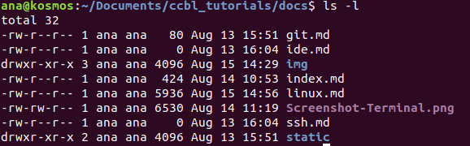

Introduction to Linux
GENERAL OVERVIEW
Linux is an operating system that is very popular amongst the scientific community due to it's clarity and compatibility with other hardwares. All these characteristics, in addition to having many functional tools that make data analysis easier, makes it an ideal system to be used research-wise. It has a very friendly interface that is quite similar to Windows, which allows the user to use it even without any prior knowledge in how terminal commands work. Albeit being so easy-to-use, the major focus here will be in providing a simple introduction on how Linux works, specifically in relation to the fundamentals on how to get simple tasks done, such as creating a file, through the terminal.
INSTALLING
It is possible to have Linux on your computer as the only operating system or have it work alongside Windows (dual boot).The easiest way to install Linux on your computer is by creating a Live CD (or pen drive) and, in this way, the installation process occurs quite smoothly. There are many tutorials online which describe it step-by-step and a suggestion would be to follow the instructions described by the link below to learn how to create a Live Pen Drive:
After succesfully creating the Live Pen Drive, you will need to boot it and make the necessary configurations. Switching back to Windows is quite easy by turning off the computer and removing the Pen Drive.
Although easy to install, a Live Pen Drive is limited in relation to the amount of space necessary for certain files. This can make it very slow and inefficient. A solution would be to have a visualization software and have Linux work as a virtual machine on Windows. A popular and free software is VirtualBox, which can be found in the link below (be sure to check if the download corresponds to Windows users if that is the case):
If a visualization software is being used, it is necessary to get used to the fact that the host will always be considered your physical computer and the guest, your virtual machine. With this concept in mind, the next step is to install the guest operating system. Once this is done, you are ready to learn the basics of command line in Terminal!
TERMINAL
The terminal, also known as the shell, is a program that receives specific codes that are typed out by the users and then directs commands that the computer acts on. Normally just by searching the word "terminal" on the computer it's easy to be found.
Example of a terminal:

Once the terminal is open on your computer, various commands can be executed. The table below describes a few of them:
| Command | Description |
|---|---|
| ls | Lists arquives |
| cd | Changes directory |
| cd .. | Return to previous directory |
| touch | Creates a new file |
| rm | Removes file |
| mkdir | Creates a new directory |
| rmdir | Removes directory |
| gedit | Runs a text editor |
| history > | Creates a text containing the code you used on terminal |
There are many other commands but these are the most basic ones that will help beginners get a head start. A good exercise would be to start by opening terminal and trying out these commands to get a closer look on what each one does.
Examples
Go to your terminal and repeat the commands

You can copy and paste the commands from here
ls
rm test/test.txt
rmdir test/
ls
mkdir test
ls
touch test/test.txt
ls test/
cd test/
ls
cd ..
ls
history > test/test.txt
cat test/test.txt | tail
ls -lh test/
chmod +x test/test.txt
ls -lh test/
rm test/test.txt
ls test/
rmdir test/
ls
UNDERSTANDING FILE PERMISSIONS
Another important detail when using linux and sharing the computer with others is understanding how to read if you have permission to access certain files. Learning how to establish who has control over the files you have created is just as important. Even if you happen to be the only user of a computer, this is an efficient method to protect your computer from suffering from particular mistakes that might be harmful.
File permissions are defined differently by each of the following:
-
USER: The person that runs the file. The general rule is that whoever created the file is therefore it's user.
-
GROUP: All the users that belong to the same usergroup will have the same type of access permission towards a file. This is useful so that many people can contribute to the same file but configurations have to be made accordingly to make sure it works.
-
OTHER: A person who is neither the owner of the file or participant of the same group the file does.
There are also three types of access permissions on linux:
-
READ PERMISSION: When talking about a file, it can be open and read. In relation to the directory, it's contents can be listed.
-
WRITE PERMISSION: A file can be altered, that is, new data can be written upon it. Deleting or renaming the file is only possible if you also have permission through the directory as well.
-
EXECUTE PERMISSION: You can run a regular file as a program or a shell script. The execute permission can be opened by the terminal by using the cd command. Although you might have permission to execute the file, you will only be allowed to list it's contents if you have the read permission to the that directory.
To view what type of permissions you have in relation to a particular file, you can run in the terminal the following: -l ls
An example of what appears is below:

Understanding how to read the symbols corresponding to each file is quite simple since each letter corresponds to a different meaning.The first character can be any of these:
- d = directory
- – = regular file
- l = symbolic link
- s = Unix domain socket
- p = named pipe
- c = character device file
- b = block device file
The following nine characters are divided into three groups. That is, the read, write, execute permission for the first three characters corresponds to the user. The second group of three shows the permission for the group and the last three shows for the other. For each group, the first character is the read permission, the second character is ther write permission and the third is execute permission.
The characters are the following:
- r = read permission
- w = write permission
- x = execute permission
- – = no permission
Finally, both the creator and the root user can manage set file permissions by using the command chmod. For information on how to do this, access: https://raw.githubusercontent.com/anaclccoelho/ccbl_tutorials/master/docs/linux.md